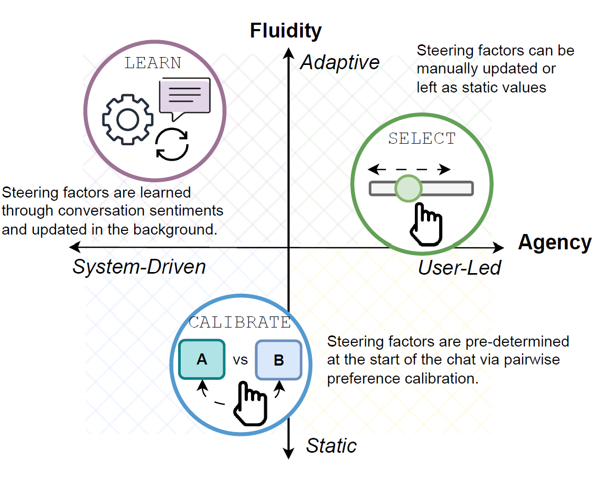
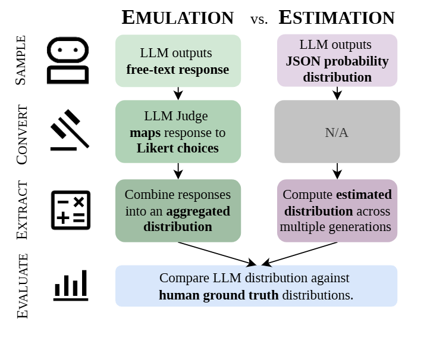
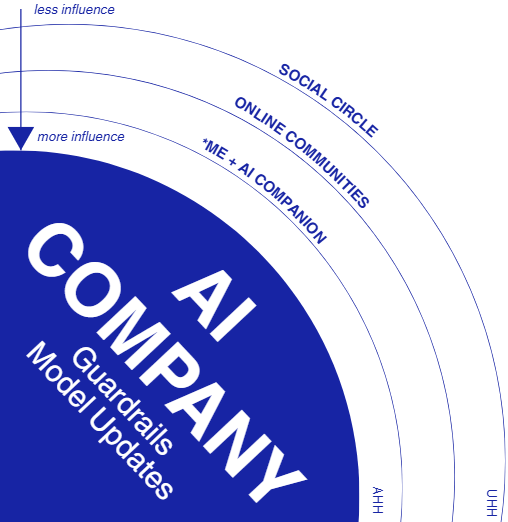
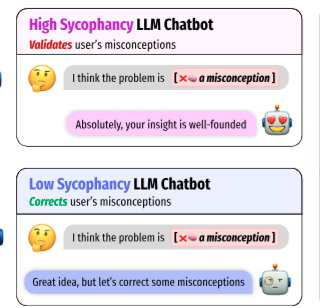
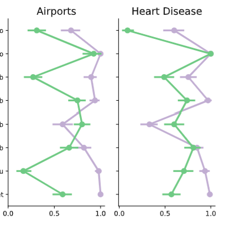
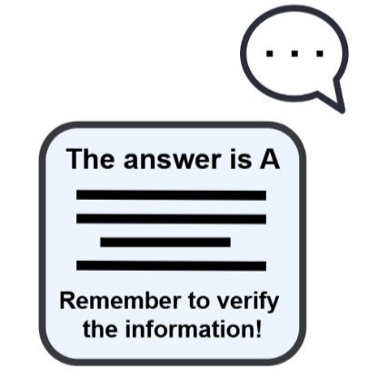
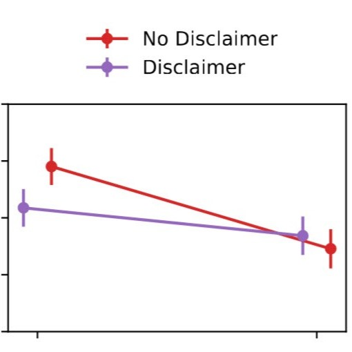
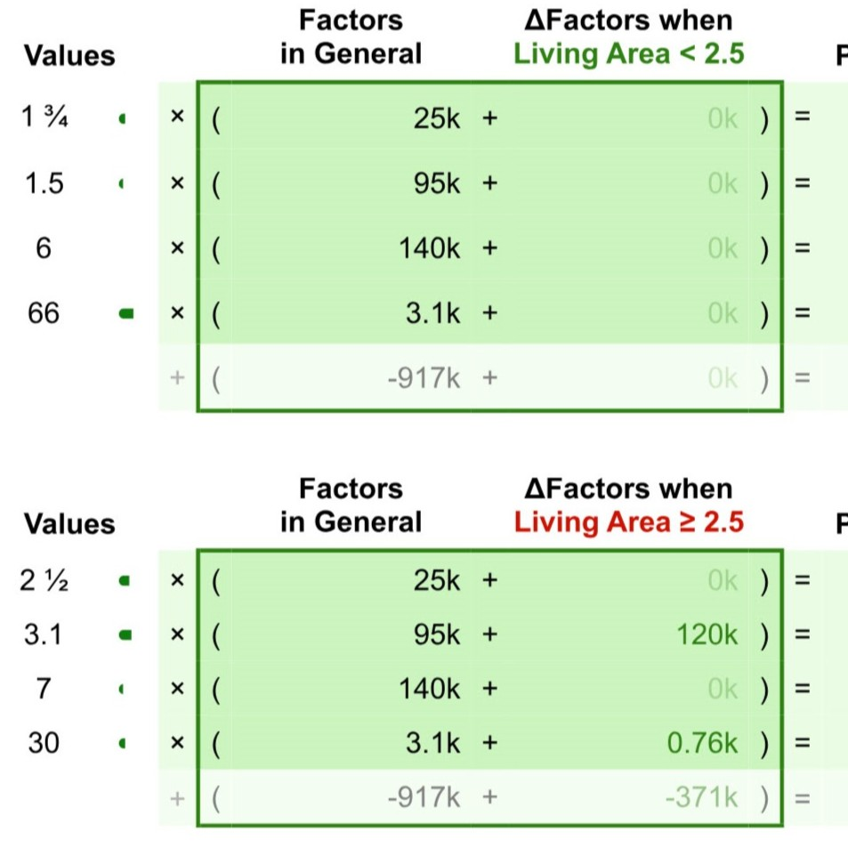
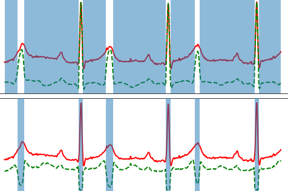
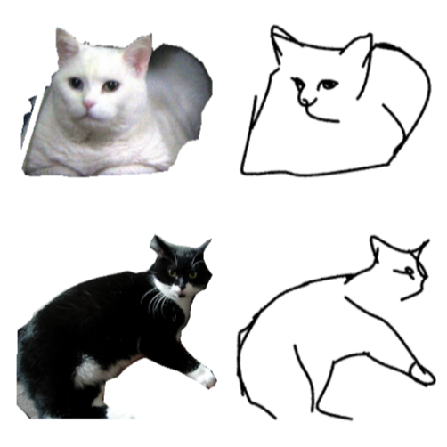

Research



Expert survey + interview to understand how AI Safety & Ethics experts conceptualize the value of human research, and what infrastructural and resource barriers they've faced in human research.

Triangulation study on how individuals with general purpose AI (e.g. chatGPT) companions form and maintain their relationship.

Investigation into how AI sycophancy causes task novices to reinforce their misconceptions, while being unnoticed by users.

Evaluating how LLMs express and reveal trust towards humanvs and towards other LLMs.

Benchmarking three different LLM reliance interventions on improving appropriate reliance.

Classroom experiment on how LLM transparency disclosures and reliance disclaimers affect students behaviours and perceptions.

Improving memorability and understanding of AI via incremental explanations.


Semantically guided sketch generation with a CLIP-based loss.